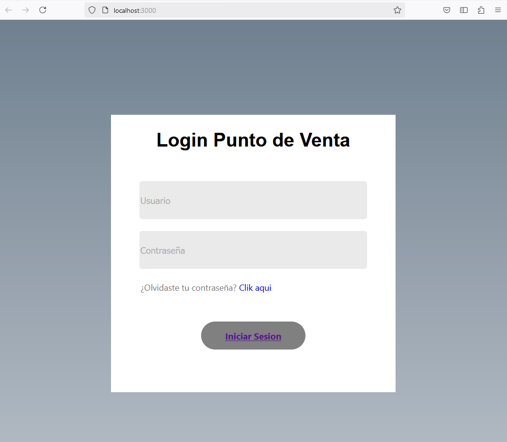
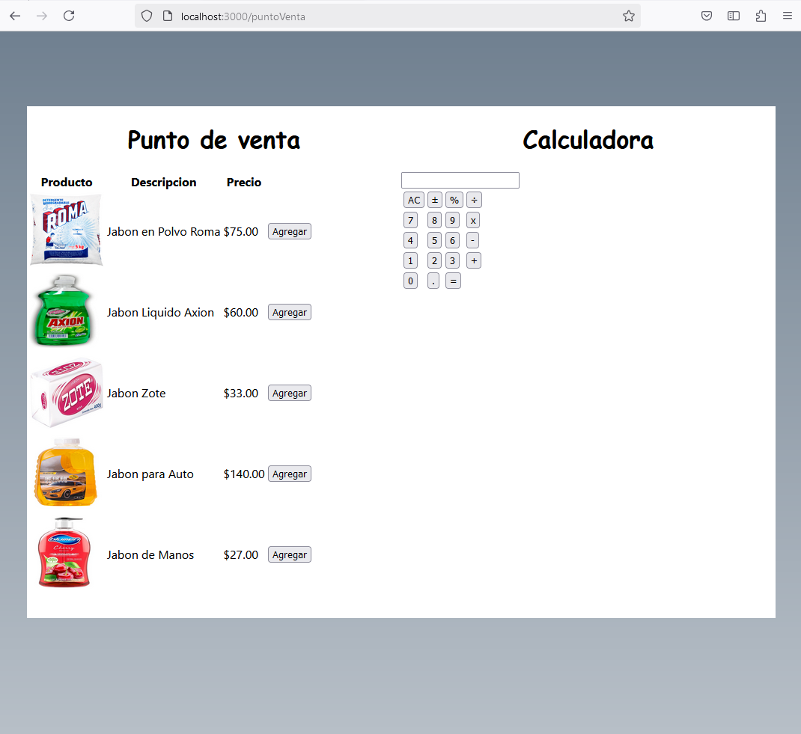

En el sistema de Marclean se solicito por parte de los usuarios un sistema que cotnenga una pagina de inicio de sesion para cada usuario pueda utilizar la aplicacion de forma segura y con sus propias configuraciones. Como podemos ver en la imagen de abajo la pagina cuenta con un pequeño formulario para entrar con Usuario y Contraseña.
Una vez que el usuario inicia sesion con su contraseña, se muestra el punto de venta. En la imagen de abajo podemos apreciar todos los elementos que contiene, los cuales son el listo de productos del lado izquierdo con su imagen, descripcion y precio. Este punto de venta tambien cuenta con sus botones respectivos para agregar al listado de compras.
Del lado derecho de esta pantalla podemos ver la calculadora la cual se utiliza para sumar las cantidades que se van agregando al listado de compras y asi el vendedor pueda hacer operaciones y sumatorias antes de concretar la venta.
